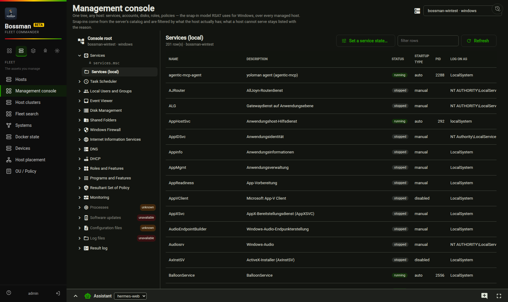
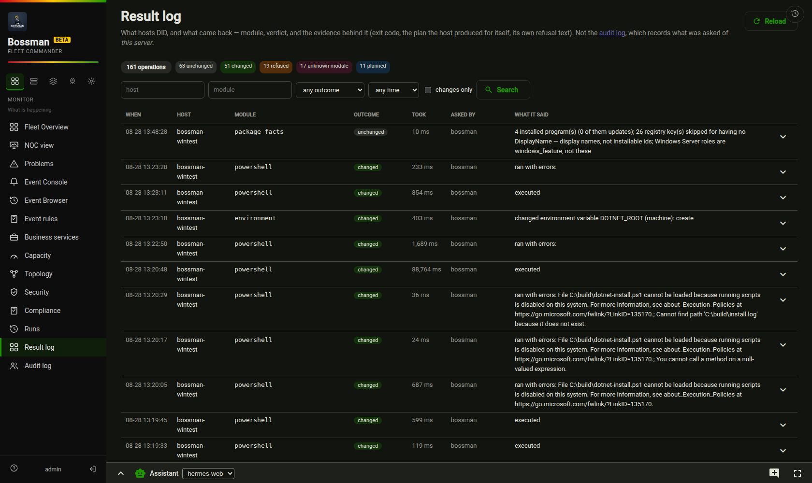
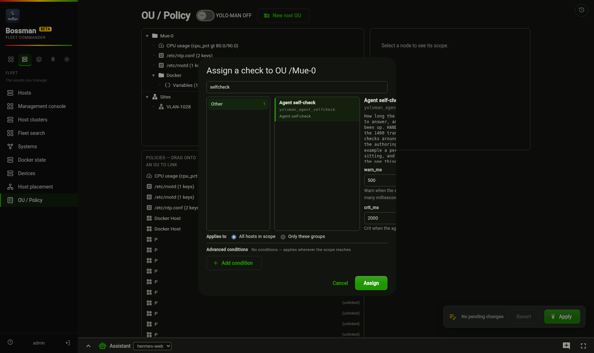

yoloman · Bossman
One agent per host, one server that knows them all, and — the part that took the longest — a system that can say what it did, why it thinks what it thinks, and what it does not know.
One name each, one job each — the distinction the whole product is built on.
on every host
A single binary that answers questions about its host and carries out declared changes. Two implementations, deliberately: Go on Linux, .NET on Windows — because a Windows host is not a Linux host with different paths, and pretending otherwise is where fleet tools usually break.
It measures (metrics, inventory, connections, eBPF signals), it executes modules, and it keeps its own record of what it did. It never dials out on its own: the server asks, the agent answers.
once, centrally
Polls every agent, stores the history, judges it against rules you declare, and offers one place to look and to act. Policies inherit the way Group Policy does — global < group < OU < site < host — so a rule is stated once and its reach is visible.
It also speaks MCP, so an AI works the fleet through the same API a person does, reading the same records rather than a summary of them.
Six things it does that are worth the words. Each one is documented in depth behind the links at the bottom.
Checks run on the host and become services with state, value and a sentence. 1432 checks are available, most translated from Checkmk; writing your own is two files and one validation command (the guide).
Measured: a hand-written check assigned through the UI reported OK, 0.208 ms
on the first cycle after its scope was applied.
Config files are parsed by a codec into values, merged per key with the scope that won recorded, and written back — with generations and rollback. 2484 file grammars, 3272 described fields.
Roles and features, scheduled tasks, shares, firewall rules, IIS, DNS, DHCP, the event log, Group Policy — 34 modules, each idempotent and previewable. Windows' own words are passed through: install state has seven values, a restart is yes/no/maybe.
MMC's snap-in tree, rebuilt: 19 snap-ins over any managed host — Linux included — declared as JSON. Create dialogs are generated from each module's own schema, so a form cannot offer a parameter the module would refuse.
Every module call leaves an operation record: the parameters, the verdict, the evidence, who asked. Eight outcomes that are never collapsed — a dry run is not a no-op, a refusal is not a crash, and timed-out may have completed.
PXE-boot a machine, image it, write its identity and its network in, and let it come up already enrolled — with roles as desired state rather than as a one-time script.
Three screens, taken from the running system while this page was written.



Machine-readable was tried as JSON and dropped. A model reading this system does not need
{"type":"string"} — it needs sentences that say what an endpoint is for, what it
refuses, and which of two similar endpoints is the right one. A schema answers none of those. So the
reference is prose, and it is generated from the running system rather than written, which is what keeps it
true.
| Page | What it answers | Where it comes from |
|---|---|---|
| Developer guide | What the system is, where truth lives, the nine contracts that must not be broken, how to add a module / check / endpoint / snap-in, and the traps that already cost real time. Its last section is addressed to a language model working in the repository. | Written by hand. The only page here that is. |
| HTTP API, endpoint by endpoint | All 481 operations in 68 groups: what each one does, its parameters in words, and what its body carries. Each group opens with one sentence saying what it is for. | Generated from a running server's /openapi.json — a route the router never
included does not exist for a caller. |
| Windows modules · Linux modules | Every module an agent exposes right now, with the parameters the module itself declares. | Generated from the agents' own GET /api/v1/tools. |
| Every screen | 54 screens in five workspaces, each described by the comment in its own source. | Generated from the UI source. |
| Writing a check | The Starlark contract, with a worked example commented with the mistakes its author made. | Written by hand, next to the check it describes. |
For a model fetching these directly: the pages above are served from this site as plain
markdown — https://imoes.github.io/yoloman/developing.md,
/api-reference.md, /modules-windows.md, /modules-linux.md. That is
the machine-readable form: unstyled text, no HTML to strip, no schema to interpret. The links in the table
point at GitHub's rendered view instead, because this site serves markdown as raw text and a human clicking
a link expects a formatted page. Same files, two audiences, one source.